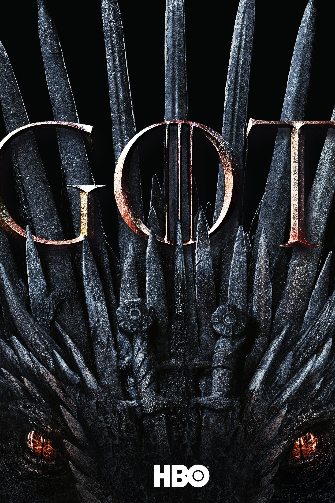

Game of Thrones é uma série de televisão e de fantasia épica baseada na aclamada obra literária "As Crónicas de Gelo e Fogo" de Gorge R.R. Martin.
A história desenrola-se nos continentes fictícios de Westeros e Essos, acompanhando as violentas lutas políticas, alianças inesperadas e guerras civis entre as nobres famílias reais pelo controlo do cobiçado Trono de Ferro.

Capa oficial da série.
Casas Principais de Westeros
-
Casa Stark:Protetores do Norte, conhecidos pelo seu forte senso de honra e pelo lema "O Inverno está a chegar".
-
Casa Lannister: Senhores de Casterly Rock, famosos pela sua enorme riqueza e influência política.
-
Casa Targaryen: Os antigos governantes de Westeros, historicamente associados ao poder dos dragões.
Para saberes mais detalhes sobre o universo fantástico da série, podes visitar o IMDb ou o site oficial de Game of Thrones da HBO.